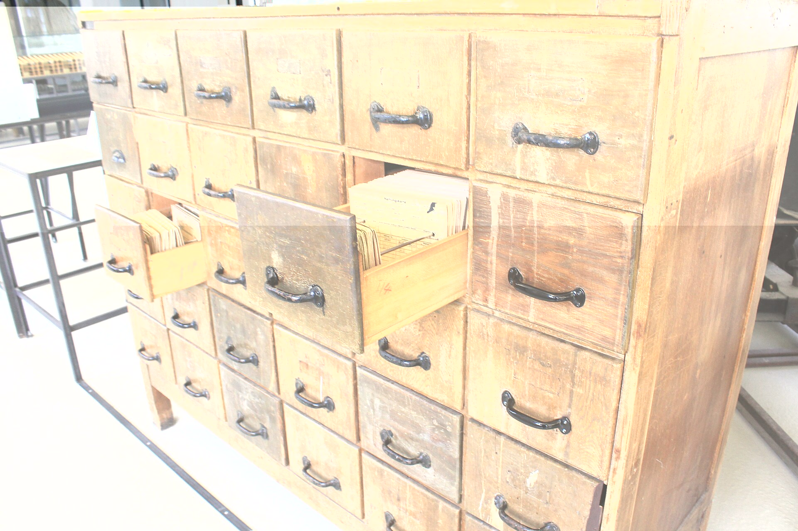
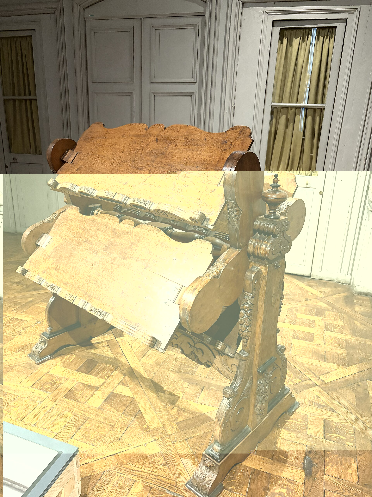

pick a card
0 of 9 locked in
rag
What RAG is
receipts
proof you show when someone doubts you
RAG makes the model bring receipts. It fetches your documents first, then answers from them, so you can check every claim.
A language model alone answers from what it memorised in training, which can be stale or missing your private data. Retrieval-Augmented Generation retrieves relevant chunks at question time, puts them in the prompt, and the model answers from that context. Sources can be cited.
Which two steps does RAG add before the model answers?
Retrieve relevant chunks, then put them in the prompt.
RAG vs fine-tuning
glow-up
a real change in how someone looks or acts
Fine-tuning is the glow-up: it changes how the model behaves. RAG is the fresh notes: it changes what the model can look up today.
Use RAG when knowledge changes often or answers must be cited. Use fine-tuning to change style, format or behaviour. They can be combined. Long context can work for small document sets, but cost and latency grow with the tokens you send.
Your policies change every month and answers need sources. RAG or fine-tuning?
RAG. Update the documents, not the model.
Why RAG answers fail
mid
mediocre, not good and not terrible
Mid retrieval, mid answer. If the right chunk never reaches the prompt, no model can save you.
Debug in order. Print the retrieved chunks for a failing question. If the answer is not in them, fix chunking or search. If it is there, fix the prompt, the chunk order or the model. Tell the model to say it does not know when the context lacks the answer.
A wrong answer, and the right text exists in your docs. What do you check first?
The retrieved chunks. Retrieval fails more often than the model does.
chunking
Chunking basics
no yap
yap means talking too much, so no yap means get to the point
Every chunk gets one idea and no yapping. Self-contained, on topic, then stop.
Chunking splits documents into retrievable pieces. Too small loses context such as pronouns and definitions. Too large blurs several topics into one vector and wastes prompt tokens. A common starting point is a few hundred tokens, then tune it against real questions.
What is the goal of a good chunk?
Self-contained and about one idea.
Chunk overlap
run it back
do it again
Run it back: repeat the last bit of one chunk at the start of the next, so a sentence cut at the edge still lands.
Overlap shares text between neighbouring chunks. Around 10 to 20 percent of the chunk size is a common starting point. More overlap costs more storage and returns near-duplicate results, so it is a trade-off, not a free win.
What is the downside of a lot of overlap?
More storage and duplicate-looking results.
Parent-child retrieval
lowkey / highkey
lowkey is quietly or a little, highkey is openly or a lot
Search lowkey, read highkey. Match on small chunks, then hand the model the bigger section around the match.
Small chunks match questions precisely. Big chunks give the model enough context to answer. Parent-child retrieval indexes the small ones and returns their larger parent section, so you get both.
Which size do you index and which do you send to the LLM?
Index the small chunk, send the larger parent.
retrieval
Keyword vs vector search
vibe check
a quick test of whether something feels right
Vector search is the vibe check: it matches meaning. BM25 is exact match: it matches the words you typed.
BM25 scores literal word overlap, so it is strong on identifiers, names and codes. Dense vector search compares embeddings, so it is strong on paraphrases but can blur rare tokens. Neither wins everywhere.
Which one do you reach for to find an exact product code?
BM25, the keyword search.
Hybrid search
W combo
W means win, so a combo that wins twice
Keyword plus vector is the W combo. Run both, then merge the two ranked lists.
Hybrid search runs BM25 and vector search, then merges the rankings. Reciprocal Rank Fusion is a simple merge: each document scores the sum of 1 divided by (k + rank) across lists, with k often 60.
What does Reciprocal Rank Fusion do?
Merges several ranked lists into one by summing 1 / (k + rank).
Reranking
gatekeep
to control who gets access
The reranker gatekeeps your prompt. Fetch many candidates, let it decide which few get in.
A cross-encoder reads the query and each candidate together and re-scores them. It is slower than first-stage search but more accurate, so you fetch roughly 20 to 50 candidates and keep the best 3 to 5.
When do you add a reranker?
When the right chunk is retrieved but ranked too low.

Retrieval is a very fast librarian. Fetch the right drawer, not the whole building.
the pipeline
Every RAG app is the same five moves. Tap a stage to open it, and keep one slang word per move.
clean fit
Turn PDFs, pages and tickets into clean text. Bad extraction ruins everything after it, so look at the output yourself.
no yap
Cut the text into self-contained pieces about one idea each, with a little overlap and metadata like source and page.
vibe coordinates
Turn each chunk into a vector that places its meaning in space. Use the same embedding model for chunks and questions.
pull up
Find the nearest chunks for the question, mix in keyword search, rerank, and keep the top few.

ate
Put the chunks in the prompt, tell the model to answer only from them and cite sources, and let it say it does not know.
cheat sheet
chunking
retrieval
testing
Starting points from common practice. Tune them on your own documents.
questions
Does RAG remove hallucinations?
No. It reduces them when retrieval is good and the prompt demands grounding. Bad retrieval can still produce a confident wrong answer.
How do I choose top-k?
Start with 3 to 5 small chunks. Raise it if answers miss information, lower it if the context gets noisy. Measure instead of guessing.
How do I evaluate a RAG system?
Score retrieval (hit rate, MRR) and generation (faithfulness to the context, answer relevance) separately, using a small set of real questions with known answers.
Do I need a vector database?
Not always. FAISS, Chroma or pgvector are enough for small data, and keyword search such as BM25 or SQL full-text is a valid retriever on its own.
Characters or tokens for chunk size?
Tokens match model limits better. Characters are fine for a first version. Be consistent and know which one your splitter uses.
How do I show sources?
Store source and page as chunk metadata, pass them in the prompt, and ask the model to cite chunk numbers.
Can I trust these numbers?
They are starting points from common practice, not laws. Test them on your own documents and questions.


.jpg){kind=link}